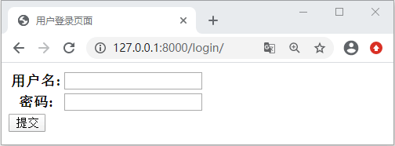

Django Auth应用定义登录视图的方式
Auth 应用作为 Django 的内置用户认证系统，也实现了用户的注册、用户登录、密码修改、退出登录等功能。这些功能被统一的称为用户的身份验证功能，Django 对这些功能做了内置应用，我们可以通过调用相应的接口来实现相应的功能。为了方便的大家理解，下面我们通过用户登录视图，对本节的内容进行讲解。
总结来看，主要分为两个步骤：根据用户传递的凭证，即用户名和密码，然后使用 authenticate 方法对获到的凭证进行校验，从而获得进过认证的 user；获取到用户对象后，使用 login 方法完成用户的登录，并可以跳转到自定义的首页，若没有获取到 user，则给出错误的提示！
需要注意，如果在用户成功登录时没有提供 next 参数，则 Django会自动跳转到 settings.LOGIN_REDIRECT_URL 设置的页面，默认为 /accounts/profile/。通常，需要修改这个变量的定义，例如，在 BookStore 项目的 settings.py 文件中定义:
1. 使用 login API定义登录视图
Auth 应用的登录、退出等功能定义在 django/contrib/auth__init__.py 文件中，部分源码如下所示：
def login(request, user, backend=None):
session_auth_hash = ''
if user is None:
user = request.user
if hasattr(user, 'get_session_auth_hash'):
session_auth_hash = user.get_session_auth_hash()
if SESSION_KEY in request.session:
if _get_user_session_key(request) != user.pk or (
session_auth_hash and
not constant_time_compare(request.session.get(HASH_SESSION_KEY, ''), session_auth_hash)):
request.session.flush()
else:
request.session.cycle_key()
......
从上述代码可以看出，该方法接受一个 HttpRequest 参数和一个 User 参数。如果使用 login 定义登录视图就会非常简单，它的应用代码如下所示：
from django.contrib.auth import login,authenticate
def login_views(request):
username=request.POST("username")
password=request.POST("password")
#调用 authenticate对user进行认证
user=authenticate(username=username,password=password)
if user:
#调用auth的login api
login(request,user)
pass
else:
pass
是不是极大的简化了登录视图的定义过程呢？因为 Auth login 这个 API 帮我们已经帮组我们完成基本的登录逻辑，我们只需要获取到用户输入的数据，对这些数据进行校验即可。总结来看，主要分为两个步骤：根据用户传递的凭证，即用户名和密码，然后使用 authenticate 方法对获到的凭证进行校验，从而获得进过认证的 user；获取到用户对象后，使用 login 方法完成用户的登录，并可以跳转到自定义的首页，若没有获取到 user，则给出错误的提示！
2. 使用内置的用户登录视图
开发者可以使用 Django 的内置用户登录视图， 内置的用户登录是基于类实现视图（CBV模式），定义在如下文件中：django/contrib/auth/views.py
它的类名为 LoginView，定义如下所示：
class LoginView(SuccessURLAllowedHostsMixin, FormView):
"""
Display the login form and handle the login action.
"""
form_class = AuthenticationForm
authentication_form = None
redirect_field_name = REDIRECT_FIELD_NAME
template_name = 'registration/login.html'
redirect_authenticated_user = False
extra_context = None
我们对其中涉及的变量做一些简单的介绍：
- form_class：指定 LoginView 视图使用的数据表单，默认为 AuthenticateForm。
- redirect_field_name：登录后重定向 URL 的参数名称，默认为 next。
- template_name：指定视图使用模板名称。
- redirect_authenticated_user：默认为 False，如果为 True，则成功登录后的用户会跳转到其他页面。
需要注意，如果在用户成功登录时没有提供 next 参数，则 Django会自动跳转到 settings.LOGIN_REDIRECT_URL 设置的页面，默认为 /accounts/profile/。通常，需要修改这个变量的定义，例如，在 BookStore 项目的 settings.py 文件中定义:
LOGIN_REDIRECT_URL="/index/update_book/
这里我们还需要使用 CBV 类视图的方式，定义 URL 模式，如下所示：path('login/',LoginView.as_view(template_name="index/login.html"))
然后我们在 inedx/templates/index 中创建 login.html 代码如下所示：
<!DOCTYPE html>
<html lang="en">
<head>
<meta charset="UTF-8">
<title>用户登录页面</title>
</head>
<body>
<form action="" method="post">
<table>
{{ form }}
</table>
<!-- 防止 CSRF 攻击-->
{% csrf_token %}
<input type="submit" value="提交">
</form>
</body>
</html>
最后我们就可以在浏览器地址栏进行访问了，输入 127.0.0.1:8000/login/ 会得到如下返回：

图1：Django 内置用户登录界面
我们完成上述的内置登录视图，在这个过程中，我们主要做了两个操作：首先是定义 login.html 模板，然后就是配置类视图的映射关系。使用 Django 内置的身份验证视图是非常简单的，除了 LoginView，认证系统还提供了注销登录的视图 LogoutView 以及 PasswordChangeView（修改密码）等。它们的使用方法类似，我们就不再赘述！图1：Django 内置用户登录界面
关注公众号「站长严长生」，在手机上阅读所有教程，随时随地都能学习。内含一款搜索神器，免费下载全网书籍和视频。

微信扫码关注公众号